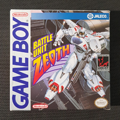
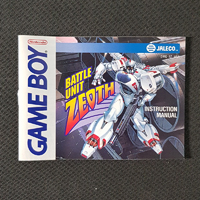
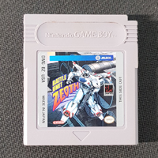
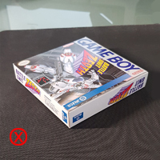
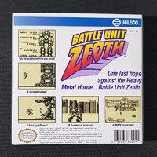
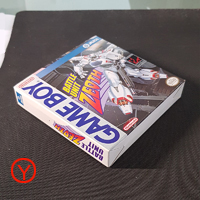
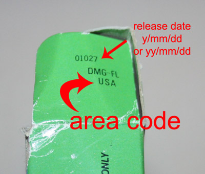
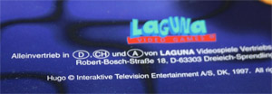

<!DOCTYPE html>
<html lang="en">

<head>
    <meta charset="UTF-8">
    <meta http-equiv="X-UA-Compatible" content="IE=edge">
    <meta name="viewport" content="width=device-width, initial-scale=1.0">
    <link rel="stylesheet" href="../style.css">
    <script src="https://kit.fontawesome.com/8921e10786.js" crossorigin="anonymous"></script>
    <title>Game Boy Database</title>
</head>

<body>

    <div id="wrapper">

        <div id="layout">

            <header>

                <ul class="icons">
                    <p>Everywhere in the world</p>
                    <ul class="container__icons">
                        <li><a href="#"><i class="fa-brands fa-facebook"></i><span class="label">Facebook</span></a>
                        </li>
                        <li><a href="#"><i class="fa-brands fa-twitter"></i><span class="label">Twitter</span></a>
                        </li>
                        <li><a href="#"><i class="fa-brands fa-instagram"></i><span class="label">Instagram</span></a>
                        </li>
                    </ul>
                </ul>
                <a href="../index.html">
                    
                </a>
            </header>

            <main>
                <h2>How can i help ?</h2>

                <div class="bloc__help">

                    <div class="container__help">
                        
                        <p>The very spirit of
                            this DMG gameboy database is based on the fact that it will be built and updated
                            by the community itself. I did provide a very first version of the database,
                            but we definitely will need YOUR help to make this database a more complete
                            and accurate tool for every DMG fan !!!
                        </p>
                    </div>
                    <div class="container__help">
                        
                        <p>Diese Datenbank wird von der gesamten Community aufgebaut, ihr seid das Herz und der Antrieb
                            dieses ambitionierten Projektes. Wir haben eine erste Version zusammengetragen und sind
                            damit
                            gestartet, aber wir brauchen EURE Hilfe um diese Datenbank zu erweitern und verfeinern. Sie
                            soll
                            jedem DMG Fan helfen, soviel Informationen wie möglich über seinen Lieblings-Handheld zu
                            finden.
                        </p>
                    </div>
                    <div class="container__help">
                        
                        <p>L'esprit de cette base de données est d'être construite et améliorée par la communauté
                            elle-même.
                            Ceci est une première version, mais nous aurons besoin de VOTRE aide pour la compléter et en
                            devenir un outil indispensable pour tout fan du Game Boy.
                        </p>
                    </div>
                    <div class="container__help">
                        
                        <p>Lo spirito di questo database si basa sul fatto che sarà costruito e aggiornato dalla stessa
                            comunità. Noi ne abbiamo fornito una primissima versione, ma avremo sicuramente bisogno del
                            TUO
                            aiuto per rendere questo database uno strumento più completo e accurato, così da essere di
                            grande utilità a tutti gli appassionati della console portatile Nintendo.
                        </p>
                    </div>
                    <div class="container__help">
                        
                        <p> El espíritu de DMG Gameboy Database se basa en el hecho de que será construida y actualizada
                            por
                            la propia comunidad. Aunque yo proporcioné una primerísima versión de la database,
                            necesitaremos
                            TU ayuda para covertirla en una herramienta más completa y precisa para el uso y disfrute de
                            cualquier fan de la Gameboy!
                        </p>
                    </div>
                    <div class="container__help">
                        
                        <p> De kracht en de ziel van deze DMG Game Boy Database schuilt in het feit dat het door de
                            community zelf wordt opgebouwd en bijgewerkt. Ik heb een eerste versie van de database
                            geleverd,
                            maar we hebben zeker jouw hulp nodig om van de database een completer en nauwkeuriger
                            hulpmiddel
                            te maken voor elke DMG-fan.
                        </p>
                    </div>
                </div>
                <div class="bloc__help">

                    <div class="container__help">
                        
                        <p>1st: you need to be registered on Messenger, add us on this social network. Messenger will be
                            the media that will allow you transfer us the information necessary for an update !

                            <br> 2nd : as we need to get proof of the existence of every version displayed on this
                            website
                            (we can’t afford updating data based on something someone saw but without proof, sorry), we
                            will need you to provide an HD picture for any update on the site.

                            <br> 3rd : so as to update the database, we will need you to provide following information :
                        </p>
                    </div>
                    <div class="container__help">
                        
                        <p>Schritt 1: Adde uns auf Facebook und nutze den Messenger um uns Bilder, Updates etc. zu
                            senden.

                            <br> Schritt 2: Da wir nachweisen müssen, dass jede Version der Spiele in unserer Datenbank
                            existiert, (wir können keine Fotos verwenden welche jemand irgendwo gefunden hat) müssen es
                            zwingend, selbst fotografierte Bilder in HD Qualität sein.

                            <br> Schritt 3: Um in der Datenbank ein Update über ein Spiel zu veröffentlichen, brauchen
                            wir
                            folgende Daten:
                        </p>
                    </div>
                    <div class="container__help">
                        
                        <p> Premièrement : vous devez posséder un compte messenger, contactez nous via ce
                            réseau social. Messenger sera l'outil privilégié pour communiquer et transférer les
                            informations de mises à jour.

                            <br> Deuxièmement, nous avons besoin d'être sûr de l'existence de chaque information (on ne
                            peut
                            se permettre d'ajouter des informations non vérifiées). Merci de prévoir une photo de bonne
                            qualité pour permettre la mise à jour du site.

                            <br> Troisièmement, pour mettre à jour la base de données, nous aurons besoin des
                            informations
                            suivantes :
                        </p>
                    </div>
                    <div class="container__help">
                        
                        <p>1 ° passo: devi essere registrato su Messenger, aggiungimi su questo social network.
                            Messenger sarà il supporto che ti permetterà di inviarci le informazioni a noi necessarie
                            per un aggiornamento.
                            <br> 2 ° passo: poiché dobbiamo ottenere la prova dell'esistenza di ogni versione
                            visualizzata su
                            questo sito Web (non possiamo permetterci di aggiornare i dati in base a qualcosa che
                            qualcuno ha visto ma senza prove, scusate), avremo bisogno che ci forniate un'immagine in HD
                            per qualsiasi aggiornamento sul sito.
                            <br> 3 ° passo: per aggiornare il database, avremo bisogno che tu ci fornisca le seguenti
                            informazioni:
                        </p>
                    </div>
                    <div class="container__help">
                        
                        <p> Primero: necesitarás estar registrado en Messenger, añádeme a ésta red social.
                            Messenger será el medio que te permitirá mandarnos cualquier información necesaria para
                            realizar cualquier actualización.

                            <br> Segundo: Como necesitamos una prueba de la existencia de cualquier versión mostrada en
                            nuestra web ( ¡Lo sentimos! Pero no nos podemos permitir actualizar nada basándonos sólo en
                            lo que alguien ha visto o vio), necesitaremos que nos envíes una foto en HD para cualquier
                            actualización.

                            <br> Tercero: para cualquier actualización de nuestra base de datos, necesitaremos que nos
                            proporciones lo siguiente:
                        </p>
                    </div>
                    <div class="container__help">
                        
                        <p> Ten eerste: je moet geregistreerd zijn op Messenger, voeg me vervolgens toe op dit sociale
                            netwerk. Messenger wordt het platform waarmee je ons de informatie kunt doorspelen die nodig
                            is voor een update.

                            <br> Ten tweede: omdat we bewijs moeten hebben voor het bestaan van elke versie die op deze
                            website wordt weergegeven, is een HD-foto nodig voor elke update op de website. We kunnen
                            het ons niet veroorloven om gegevens bij te werken op basis van iets dat iemand gezien
                            heeft, maar daarvoor geen bewijs kan leveren.

                            <br> Ten derde, om de database bij te werken, hebben we de volgende informatie nodig:
                        </p>
                    </div>
                </div>
                <div class="bloc__help">

                    <div class="container__help">
                        
                        <p>Pics of the box (front cover a minima) : we need you to take a picture of the box so as to
                            illustrate the update you think necessary. So as to get a good standard for the pictures, we
                            will need you to take the picture perpendicularly, as explained above. Beware of the flash,
                            I was not really good as shown below ?)
                        </p>
                    </div>
                    <div class="container__help">
                        
                        <p>Bilder der Verpackung/Box (mindestens das Frontcover) : Wir brauchen Bilder der Box um das
                            Update zu visualisieren, am besten Bilder, von allen Seiten der Box. Als Standard für die
                            Bilder bitten wir dich, die Fotos immer Senkrecht zu machen und nicht aus verschiedenen
                            Winkeln. Alle Informationen auf dem Bild müssen klar lesbar sein und dürfen nicht
                            verschwommen oder verwaschen sein. Bitte achtet auch auf das Blitzlicht, der Lichtkegel wie
                            in unserem Beispiel unten sollte vermieden werden.
                        </p>
                    </div>
                    <div class="container__help">
                        
                        <p> Photos de la boîte (au moins la face avant) : nous vous demanderons de prendre une photo
                            pour illustrer les mises à jour que vous souhaitez ajouter. Merci de prendre la photo de
                            manière perpendiculaire, comme indiqué ci-dessous. Attention au flash, je n'ai pas été très
                            bon pour l'exemple ci-dessous !
                        </p>
                    </div>
                    <div class="container__help">
                        
                        <p>Foto della scatola (almeno la cover frontale). Per rendere valido l’aggiornamento, avremo
                            bisogno delle immagini della scatola, se possibile anche i lati e il retro. Per ottenere un
                            buon risultato, consigliamo di scattare le foto perpendicolarmente, le foto devono essere
                            nitide e le scritte leggibili. (Attenzione al flash, il risultato ottenuto può non risultare
                            ottimale, come mostrato nelle immagini seguenti).
                        </p>
                    </div>
                    <div class="container__help">
                        
                        <p> Fotos de la caja (Al menos de la portada): necesitamos una foto de la caja, así como de
                            cualquier parte de la misma que creas necesaria (laterales, trasera...) actualizar. Para
                            obtener un resultado óptimo, toma la foto perpendicularmente a la caja, de manera que las
                            letras se vean claras y nítidas. ¡Ten cuidado con el flash al hacer la foto!
                        </p>
                    </div>
                    <div class="container__help">
                        
                        <p> Fotos de la caja (Al menos de la portada): necesitamos una foto de la caja, así como de
                            cualquier parte de la misma que creas necesaria (laterales, trasera...) actualizar. Para
                            obtener un resultado óptimo, toma la foto perpendicularmente a la caja, de manera que las
                            letras se vean claras y nítidas. ¡Ten cuidado con el flash al hacer la foto!
                        </p>
                    </div>

                    <div class="container__pics">
                        
                        
                        
                        
                        
                        
                        
                        

                    </div>
                </div>

                <div class="bloc__help">

                    <div class="container__help">
                        
                        <p> Right flap's picture when box's opened : on the flap is displayed the code of the edition.
                            This is very important, as this code gives a lot of key information (region, release date,
                            variations, etc…): this code is the very key of this database.
                        </p>
                    </div>
                    <div class="container__help">
                        
                        <p> Bild der rechten Lasche, wenn die Box geöffnet ist: Auf der Lasche ist der Versionen-Code
                            ersichtlich. Dieser ist sehr wichtig weil er uns Schlüsselinformationen wie Region,
                            Erscheinungsdatum, Variante, etc... gibt. Dieser Code ist Massgeblich entscheidend für
                            unsere Datenbank.
                        </p>
                    </div>
                    <div class="container__help">
                        
                        <p> Lanquette intérieure droite quand la boîte est ouverte : sur cette languette est indiqué le
                            code de l'édition. Ceci est très important, car ce code nous fournit beaucoup d'informations
                            clé (région, date de sortie, variation,...). Ce code est la clé de cette base de données.
                        </p>
                    </div>
                    <div class="container__help">
                        
                        <p> Foto dell’aletta destra quando la scatola è aperta: in questa aletta è visualizzato il
                            codice dell'edizione. Questo è molto importante, poiché questo codice fornisce molte
                            informazioni chiave (regione, data di rilascio, variazioni, ecc.): Questo codice è la chiave
                            stessa di questo database.
                        </p>
                    </div>
                    <div class="container__help">
                        
                        <p> Pestaña derecha de la caja cuando está abierta: en esta pestaña encontraremos el código de
                            la edición. Esta información es muy importante ya que nos proporciona información clave
                            (región, fecha de lanzamiento, versión,...). Este código es la CLAVE de nuestra database.
                        </p>
                    </div>
                    <div class="container__help">
                        
                        <p> Foto van de rechterflap bij de geopende doos: op deze flap staat de code van de editie. Dit
                            is erg belangrijk omdat deze code veel belangrijke informatie bevat (regio, releasedatum,
                            variaties, enzovoort). De code is als het ware de sleutel van deze database.
                        </p>
                    </div>
                    <div class="explanation__pic">

                        
                    </div>
                </div>

                <div class="bloc__help">

                    <div class="container__help">
                        
                        <p> Pics of the content of the box, taken individually. If the content is the cartridge, the
                            manual and for example a poster, we will need you to take each item individually, so as to
                            get a database as detailed as possible!

                            In particular, we will need you to take care of the fact that the code on the manual can be
                            clearly seen (especially for the versions of the box, like usa-1, usa-2…).
                        </p>
                    </div>
                    <div class="container__help">
                        
                        <p> Die Bilder sind einzeln anzufertigen, wenn ihr von einem Spiel z.Bsp.eine Box habt, die
                            Spielkassette und ein Poster, dann bitten wir Euch, alles einzeln zu fotografieren um die
                            Datenbank so detailliert wie möglich zu gestalten.

                            Auch der Versionen-Code auf der Bedienungsanleitung muss uneingeschränkt lesbar sein (Es
                            kann vorkommen dass er nicht mit der Box übereinstimmt, NOE-1 Box aber NOE-2
                            Bedienungsanleitung).
                        </p>
                    </div>
                    <div class="container__help">
                        
                        <p> Photos de l'intérieur de la boîte. Si dans le contenu vous avez la cartouche, le manuel et
                            par exemple un poster, nous aurons besoin d'une photo séparée de chaque élément, pour rendre
                            cette base de données aussi complète que possible !

                            En particulier, faites attention à ce que le code du manuel soit bien visible (en
                            particulier pour les versions de boîtes telles que USA-1, USA-2...).
                        </p>
                    </div>
                    <div class="container__help">
                        
                        <p> Foto del contenuto della scatola, prese singolarmente. Se il contenuto è la cartuccia, il
                            manuale e, ad esempio, un poster, avremo bisogno che tu prenda ogni articolo singolarmente,
                            in modo da ottenere un database il più dettagliato possibile!
                            Attenzione, è molto importante che il codice sul manuale possa essere letto chiaramente
                            (infatti il codice del manuale può differire da quello della scatola, ad esempio esso può
                            essere ITA-2 mentre il codice della scatola ITA-1, ciò indica una riedizione del manuale).
                        </p>
                    </div>
                    <div class="container__help">
                        
                        <p> Fotos del contenido de la caja de manera indivual. Si, por ejemplo, el contenido de la caja
                            es un cartucho, manual y poster, haremos fotos de cada uno de manera individualizada y
                            detallada (Es muy importante que se puedan leer las letras en el cartucho, manual,...)
                            .¡Necesitamos que nuestra database sea lo mas detallada posible!
                        </p>
                    </div>
                    <div class="container__help">
                        
                        <p> Foto's van de inhoud van de doos, afzonderlijk genomen. Wanneer de inhoud bijvoorbeeld
                            bestaat uit de cartridge, handleiding en eventueel een poster, dan hebben we van elk item
                            een afzonderlijke foto nodig om een zo gedetailleerd mogelijke database te krijgen.

                            In het bijzonder moet je erop letten dat de code op de handleiding duidelijk zichtbaar is.
                            Dat geldt vooral voor de verschillende versies van de doos, zoals USA-1, USA-2, �???????...
                            .
                        </p>
                    </div>
                    <div class="explanation__pic">

                        
                    </div>
                </div>

                <div class="bloc__help">

                    <div class="container__help">
                        
                        <p> Publishers and developers are already known, but we'll join you if a problem's met.

                            I am aware I ask a lot here, but the more you will provide information, the more the
                            database will be complete and accurate, the more we will all be proud of our baby !!!

                            Of course, anybody participating in the community project will have his name displayed on
                            this website's front page. Thanks a lot in advance for what we will all build together !!
                        </p>
                    </div>
                    <div class="container__help">
                        
                        <p> Die Publisher und Entwickler sind bereits bekannt, aber wir werden Dir helfen, falls ein
                            Problem auftaucht.

                            Ich weiss, dass wir viel von Euch verlangen, aber je mehr Informationen und Bilder ihr
                            bereitstellt, umso genauer und kompletter wird unsere gemeinsame Datenbank und umso stolzer
                            können wir auf unser gemeinsames Baby sein!!!

                            Natürlich wird jeder Person die bei diesem Community-Projekt mitmacht, namentlich auf der
                            Frontpage genannt. Vielen Dank im Voraus, für das, was wir zusammen aufbauen werden!!
                        </p>
                    </div>
                    <div class="container__help">
                        
                        <p> Nous connaissons déjà les éditeurs et développeurs des jeux référencés, mais nous vous
                            contacterons si nous décelons un problème.Je suis conscient que je vous en demande beaucoup,
                            mais plus nous aurons d'informations, plus cette base sera complète et utile, et nous serons
                            fiers de notre bébé !

                            Bien sûr toute personne aidant pour ce projet verra son nom affiché sur la page d'accueil du
                            site. Merci par avance pour ce que nous construirons ensemble !
                        </p>
                    </div>
                    <div class="container__help">
                        
                        <p> Editori e sviluppatori sono già noti, ma vi aiuteremo in caso di problemi.
                            Sono consapevole di chiedere molto, ma più informazioni fornirai, più il database sarà
                            completo e accurato, e tutti saremo più orgogliosi di questa nostra creatura!
                            Naturalmente, chiunque partecipi al progetto della comunità, avrà il suo nome visualizzato
                            sulla prima pagina di questo sito Web. Grazie mille in anticipo per ciò che riusciremo a
                            costruire tutti insieme!
                        </p>
                    </div>
                    <div class="container__help">
                        
                        <p> Los editores y desarrolladores son conocidos, pero nos uniremos a ti en caso de problemas.
                            Soy consciente de que pido mucho, pero cuanto más información nos proporciones, más completa
                            y precisa será la database, y ¡¡¡más orgullosos nos sentiremos de nuestro bebé!!! Por
                            supuesto, cualquier persona que participe en el proyecto tendrá su nombre en la página
                            principal de laweb. ¡Muchas gracias de antemano por lo que construiremos entre todos!
                        </p>
                    </div>
                    <div class="container__help">
                        
                        <p> Uitgevers en ontwikkelaars zijn al bekend, maar we houden rekening met je opmerkingen als er
                            zich een probleem voordoet. Ik ben me ervan bewust dat ik veel vraag, maar hoe meer
                            informatie je verstrekt, des te completer en nauwkeuriger zal de database zijn, en hoe meer
                            we met zijn allen trots kunnen zijn op ons geesteskind. Vanzelfsprekend zal de naam van
                            iedereen die deelneemt aan dit communityproject verschijnen op de frontpagina van deze
                            website. Alvast bedankt voor wat we allemaal samen gaan bouwen.
                        </p>
                    </div>
                </div>

                <div class="bloc__help">
                    <p>Thanks to Eegbor, Marko, Steven and so on for translation</p>
                </div>
            </main>


            <span id="hamburger">&#9776</span>
            <div class="sidebar" id="mySidebar">
                <a href="#" class="closebtn" id="closebtn">&times</a>

                <h3>Menu</h3>
                <!-- Search -->
                <div id="search" class="alt">
                    <form method="post" action="#">
                        <input type="text" name="query" id="query" placeholder="Search" />
                        <i class="fa-solid fa-magnifying-glass"></i>
                    </form>
                </div>
                <ul>
                    <li class="items">

                        Fullsets 1/2
                        <span>&#9660</span>
                        <ul class="sub__list">
                            <a href="./fullset-ASI.html">
                                <li class="items__sub__list">ASI</li>
                            </a>
                            <li class="items__sub__list">AUS</li>
                            <li class="items__sub__list">CAN</li>
                            <li class="items__sub__list">CHN</li>
                            <li class="items__sub__list">ESP</li>
                            <li class="items__sub__list">EUR</li>
                            <li class="items__sub__list">FAH</li>
                            <li class="items__sub__list">FRA</li>
                            <li class="items__sub__list">FRG</li>

                        </ul>

                    </li>
                    <li class="items">

                        Fullsets 2/2
                        <span>&#9660</span>
                        <ul class="sub__list">
                            <a href="./pages/fullset-ASI.html">
                                <li class="items__sub__list">ASI</li>
                            </a>
                            <li class="items__sub__list">AUS</li>
                            <li class="items__sub__list">CAN</li>
                            <li class="items__sub__list">CHN</li>
                            <li class="items__sub__list">ESP</li>
                            <li class="items__sub__list">EUR</li>
                            <li class="items__sub__list">FAH</li>
                            <li class="items__sub__list">FRA</li>
                            <li class="items__sub__list">FRG</li>

                        </ul>

                    </li>
                    <li class="items">
                        Zoom On
                        <span>&#9660</span>
                        <ul class="sub__list">
                            <a href="./cartridgeCollection.html">
                                <li class="items__sub__list">The Game Boy cartridge collection</li>
                            </a>
                            <a href="./adsCatalog.html">
                                <li class="items__sub__list">Ads & Catalog</li>
                            </a>
                            <a href="./pages/fullset-ASI.html">
                                <li class="items__sub__list">Dig into the database</li>
                            </a>
                            <a href="./pages/fullset-ASI.html">
                                <li class="items__sub__list">Zoom on companies</li>
                            </a>
                            <a href="./pages/fullset-ASI.html">
                                <li class="items__sub__list">Classics Disney</li>
                            </a>
                            <a href="./pages/fullset-ASI.html">
                                <li class="items__sub__list">Ocean budget white boxes</li>
                            </a>
                            <a href="./pages/fullset-ASI.html">
                                <li class="items__sub__list">Player's choice</li>
                            </a>
                            <a href="./pages/fullset-ASI.html">
                                <li class="items__sub__list">Timeline listing</li>
                            </a>


                        </ul>
                    </li>
                    <li class="items">
                        About
                        <span>&#9660</span>
                        <ul class="sub__list">
                            <a href="../pages/help.html">
                                <li class="items__sub__list">How can i help ?</li>
                            </a>
                            <a href="./pages/fullset-ASI.html">
                                <li class="items__sub__list">Statistics</li>
                            </a>
                            <a href="../pages/team.html">
                                <li class="items__sub__list">The team</li>
                            </a>


                        </ul>
                    </li>
                </ul>
                
            </div>

            <footer>

                <div class="container__section">
                    <div class="footer__section">
                        <h2>GAME BOY DATABASE</h2>
                        <p>Everywhere in the world</p>
                    </div>

                    <div class="footer__section">
                        <div class="row">
                            <a href="#"><i class="fa-brands fa-facebook"></i></a>
                            <a href="#"><i class="fa-brands fa-twitter"></i></a>
                            <a href="#"><i class="fa-brands fa-instagram"></i></a>
                        </div>

                        <div class="row">
                            <li><a href="">Contact Us</a></li>
                            <li><a href="">Privacy Police</a></li>
                            <li><a href="">Terms and condition</a></li>
                        </div>

                    </div>

                </div>
                <div class="copyright">
                    Game Boy Database 2022 - ALL rights reserved <br> Designed by MonkeysDev || Illustrations by
                    Ivankaiser
                </div>
            </footer>
        </div>
    </div>
    <script src="../script.js"></script>
</body>